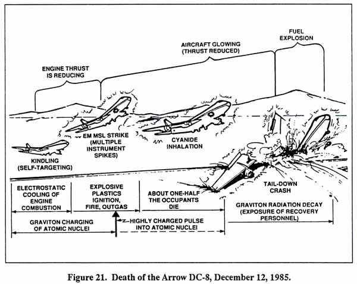

ORDER THE ALL NEW
2ND EDITION
OF "FER DE LANCE"
Updated to the year 2002
Stunning new revelations
about the secret scalar
EM wars the media ignores
THIS BOOK IS THE
ONLY SOURCE FOR
THIS INFORMATION
|
|
ORDER THE ALL NEW Stunning new revelations THIS BOOK IS THE |
|
GRAVITOBIOLOGY Death of the Arrow DC-8 Soviet tests against actual U.S. targets continued over the years. In 1972 at a secret meeting in Prague of the leaders of the European Communist parties, Leonid Brezhnev confirmed that detente was a hoax (just as Gorbachev's Glasnost is a hoax!). Brezhnev named 1985 as the year that the Soviets would be ready to control the skies, the oceans, and most of the land area as they might wish. In other words, all the great strategic scalar EM weapons would be completed, deployed, and operationally tested. On December 12, 1985, Soviet ''over-the-horizon radars" - with infolded Whittaker bidirectional EM wave structures to provide distance-independent holography and dispersion-free phase conjugate shooting - locked-on and destroyed a U.S. Arrow Airlines DC-8 jet aircraft at Gander International Airport, Newfoundland. In destroying the aircraft as a demonstration that the 1985 schedule had been met and the Americans were none the wiser, the Soviets killed 248 U.S. Army troops and 8 civilian crewmembers. [See Figure 21]. The troops were U.S. paratroopers returning to their home station from UN peacekeeping duties in the Middle East. They were coming home for Christmas, and their parents, families, and friends were waiting for them in happy anticipation. The terrible tragedy took those happy young lives, and the lives of the fine Arrow crew - one of its best. It was not an accident, and it was not a terrorist bomb that destroyed the aircraft and killed all those young soldiers and the crew. It was a brutal, cynical, overt act of war by the Soviet Union. It was the final demonstration to Gorbachev of meeting the Soviet 1985 schedule for having these giant weapons deployed and operationally ready and tested. Just two weeks earlier, the weapon had been tested for the third time against a U.S. shuttle launch, but in a nondestructive manner. Some six weeks after killing the Arrow, the same weaponry would be used in a highly specialized kill of the Challenger with its crew of seven. But here is what really happened to the Arrow DC-8 on December 12, 1985. |

| For brevity, we skip all preliminaries,
and go immediately to the aircraft as it built up speed down the runway
on its takeoff run. As the Arrow DC-8 aircraft sped down the runway, an
eyewitness observed multiple beams of light form in the clouds overhead
- in fact, she observed the self-focusing of the scalar potential
beams of the interferometer. This self-focusing (self-targeting) began
to cause electrostatic cooling in the aircraft engines' combustion
gases. This is easily accomplished by properly adjusting the bias
potential on the electrical ground of the distant interferometer
transmitters in Russia, so that the transmitter potential is below the
ambient potential of the target - the aircraft speeding down the runway
in Newfoundland. If the transmitter potential is lower, a gradient
exists in the scalar beam Whittaker structure joining the aircraft and
the Russian transmitters, and energy will flow through the internal
Whittaker structures, from hot spots on the airplane - such as the
fiercely burning combustion gases - to the distant transmitter
electrical ground. This will electrostatically cool the greatest hot
spots - the hot combustion gases inside the engines.
The electrostatic cooling in the combustion gases inside the engines caused them to lose exhaust gas velocity, hence reducing the engines' thrust - just at takeoff rotation. As the aircraft began to rotate for liftoff, its engines were already losing substantial thrust, although they were still rotating at full speed. Once the weapon was focused, Soviets fired an electromagnetic missile directly at the aircraft, using distance-independent holography, employing the internal Whittaker EM wave structures of the scalar potential beams. The interfering sky beams flared as an electromagnetic missile formed and shot to the aircraft. (The EM missile strike was seen by the witness as just a ball or beam of light that streaked from the glowing beams in the clouds, down to the aircraft.) The EM missile struck the aircraft in the right side of its fuselage ahead of the engines and blasted a hole right through the fuselage. This anomalous hole was noted. It was tested and found to have no chemical residues, proving that it was not due to a chemical explosion or a terrorist bomb However, it was due to the strike of the EM missile! The fierce ball of EM energy penetrated the fuselage and struck the aircraft's interior plastics, explosively igniting them instantly - all just at liftoff. Multiple independent witnesses saw the aircraft glowing with an orange light, from the fierce firelight shining out the windows and the radiant energy of the locked-on interferometry beams. Interestingly, the witness that saw the beams form in the sky, and the beam shoot down and strike the aircraft, was not allowed to present her testimony to the official board of investigation The flaring of the skybeams associated with the EM missile strike, and the glow on the aircraft from the electrical energy in the locked-on scalar EM beams, brightly lit up the cabs of trucks speeding down the nearby highway. The strike of the EM missile also caused a sharp electrical spike in two instruments on board the aircraft, as recorded by the flight recorder. The instruments and the flight recorder actually recorded the strike of the EM missile itself [Figure 22]. The aircraft was glowing from the Whittaker beam structure holography and beam tracking and self-targeting. Inside the struck aircraft, in addition to the explosive fire and fierce firelight, violent outgassing from the explosive ignition of the plastics produced an explosion of soot and toxic fumes, including highly lethal hydrogen cyanide gas. With a breath or two, lethal doses of the toxic fumes were inhaled by the surrounding occupants. About half the personnel on board were already dead or dying of cyanide poisoning as the faltering plane reached its high point of less than 100 feet, still tail-down. The U.S. Army performed autopsies on the remains of almost all the dead personnel in the crash. These autopsies indicated that almost half the personnel were already dead of hydrogen cyanide poisoning before the airplane exploded on impact with the earth This autopsy information was illegally withheld from the official investigating board for the accident - another deliberate criminal interference with the proceedings. But to return to the faltering Arrow DC-8. With its engine thrust steadily diminishing by electrostatic cooling of engine combustion gases, even though the turbines were rotating at good speed, the stricken aircraft sank, still tail down, and struck the ground, exploding and killing the remaining personnel on board, and scattering the burning wreckage over the crash area. However, the sharp strike of the EM missile with its extremely powerful associated scalar EM pulse had intensely "quick-charged" and activated the atomic nuclei of aircraft materials, metals, etc in the adjacent areas of the aircraft surrounding the strike. These Whittaker/scalar-activated (scalar-charged) nuclei were now emitting strong scalar graviton radiation So strong scalar graviton radiation - scalar potential radiation - was issuing from the scattered parts and burning materials in the crash area. During the next few days, recovery personnel were exposed to this unsuspected scalar radiation. Many of them (about 60 or so) later developed delayed illnesses and health changes similar to those in scalar-radiated U.S. Embassy personnel in Moscow dizziness, headaches, nausea, stomach and intestinal upset, liver changes, blood changes, vertigo, and stress syndrome symptoms. We accent this point most strongly We have seen these symptoms before, in personnel radiated by the Soviets at the U S. Embassy in Moscow. The Johns Hopkins study of that situation clearly shows that the active ingredient is the scalar potential, not ordinary EM force fields. We know it is scalar EM potential radiation that causes these delayed health symptoms. Further, from our study of the Kaznacheyev cytopathogenic effect; the Popp cellular communication system, and the Priore anticancer machine, we know the precise mechanism that causes the diseases. The signatures of the use of the scalar EM weapon are clear. Further, additional strong evidence exists of prior 1985 nonlethal testing of the same weapon that was utilized to kill the Arrow DC-8. Several months before the kill of the Arrow DC-8, another anomalous loss of engine power by an aircraft is interesting. In February 1985, on a flight from Taipei to Los Angeles, a China Airlines Boeing 747SP about 300 miles northwest of San Francisco was subjected to a similar but milder "self-targeting and cooling of engine combustion gases" treatment by the same Soviet weapon. [Figure 23]. At 41,000 feet the aircraft first experienced a slight turbulence - probably just when the scalar lock-on of the weapon occurred, where the emerging outfolded EM energy in the surrounding air created some slight turbulence. Then self-targeting began in the Whittaker structure of the Woodpecker standing potential wave interferometer beams. The initiation of self-targeting narrowed the interferometer onto its engine combustion gases target in the aircraft engines, causing substantial emergence of negative energy in their combustion gases. This electrostatically and drastically cooled the combustion gases, causing seriously decreased exhaust velocity, loss of engine thrust, and a special type of engine flame-snuffing. First one engine failed from the drastic cooling of its gases, and then the others failed in short order. The failures and resulting plunge of the aircraft left several signatures, however, of the anomalous mechanism causing them. Electrical power on board the aircraft did not fail, because the engine failure was anomalous loss of thrust in fully rotating turbines due to direct electrostatic cooling of the combustion gases in the engines themselves. Hence the mechanically coupled electrical generators were still rotating at full speed and producing electrical power, and so the aircraft electrical system maintained power. Passenger oxygen masks did not deploy, indicating that engine rotational power (not thrust!) was always available to operate electrical and pressurization systems. In a hair-raising, uncontrolled plunge of the aircraft toward the earth, the pilot fought to restart the engines and regain control of the aircraft. The instruments reacted anomalously. The crew reported that the stick shaker did not activate and the overspeed warning clacker did not activate. Severe G-loads were experienced in the downward plummet of the aircraft, causing severe distortion of the tail cone and damage to that section. Anomalies in the G-forces inside the aircraft also occurred. The flight engineer was totally immobilized by the g-forces at his cockpit duty station, yet the pilot and copilot directly on either side of him were unaffected. This is a highly significant "selective gravity and selective inertia" anomaly and a clear signature of the negative energy being introduced into the aircraft by the self-targeting Whittaker beams. As the aircraft plummeted down, it fell out of and away from the intersecting Whittaker interference beams. Apparently the distant Soviet operator deliberately did not continue to track and attack the target as it fell. Once the aircraft fell out of the EM kindling/outfolding in the beam intersection, the scalar activation in the engines and vicinity began to decay away. Since no drastic pulse input - such as the strike of an EM missile - was employed by the Soviet weapon, scalar activation was not severely high. Thus only light-to-moderate activation of nuclei occurred, and this is a short-lived phenomenon that will decay quickly once the steady activation beams are removed. In other words, the excess scalar charge on the nuclei began to discharge by scalar emission, and the cooling of the combustion gases began to decrease steadily. Instrumental anomalies occurred as well, since instruments interact individually to being scalarly activated. The crew reported that the cockpit instruments detected immediate autopilot disengagement; flight data recorder instruments showed that the autopilot did not disengage during the initial descent. Thus both the pilot and the autopilot conceivably were fighting to move the control surfaces during at least the initial phase of the fall. The landing gear lowered, but the pilot did not initiate the action. After a fall of some 32,000 feet in about 2 minutes, the Whittaker/scalar EM activation was discharged sufficiently so that, with internal combustion cooling greatly diminished, the pilot managed to restart three engines and regain control of the aircraft. The crew then made an emergency landing at San Francisco International Airport. For example references, see (1) Bearden, Fer-de-Lance, Mar. 4, 1985, p. 175-176; (2) Aviation Week & Space Technology, Feb. 25, 1985, p. 28; Mar. 4, 1985, p. 29; (3) 'Jetliner drops 32,000 feet; 400 aboard; 50 are injured,' AP release, Huntsville [Alabama] Times, Feb. 20, 1985, p. 1; (4) 'China Airlines pilot denies cockpit error,' AP release, Huntsville [AIabama] Times, Feb 21, 1985, p. A-9. But there is much additional evidence that bears directly on the scalar kill of the aircraft at Gander. On Nov. 26, 1985, two weeks before the kill of the Arrow DC8, the same Soviet weapon was tested nondestructively against a U.S. shuttle launch at Cape Canaveral, Florida. (This was the third nondestructive test using a launching space shuttle/booster as a convenient simulated ICBM-practice target.) Seconds before the launch, an offset strike of an EM missile was actually photographed by Bob Gladwin [Figure 24]. The photograph was later printed by this author [Bearden, Fer-de-Lance, 1986, p. 187.] Over the general launch area, another holographic ball of light - a marker beacon used by the Whittaker interferometer for precise distance-independent registration in the target area - was clearly observed by hundreds of persons and photographed by George Suchary. [Bearden, Fer-de-Lance, 1986, p. 182]. A similar holographic ball of light for precise registration was also videotaped above the explosion of a Titan 34-D missile seconds after launch in April 1986; that Titan was also destroyed by the strike of an EM missile or by a very strong EM pulse through the Whittaker channel of a Soviet scalar interferometer. [See Figure 25]. In 1986 a Delta rocket was also destroyed by the range safety officer after an anomalous internal EM surge command shut down the main liquid-fueled engine, with the three strap-on boosters still burning, so that the rocket went unstable. A mysterious light streak was observed on videotape to approach the rocket from below and from the side, rising and striking the vehicle, just before the mysterious main engine shutdown. Precisely such anomalous "internal command and control switching by introduction from an external source" has been exhibited by the British Ariel VI satellite as well. Also in Spring of 1986, a French Ariane missile suffered mysterious shutdown interference, resulting in the destruction of the rocket. In the case of the Arrow DC-8, high U.S. and Canadian officials - not knowing anything of scalar electromagnetics - were probably very afraid that the aircraft had actually been bombed by a terrorist group, possibly on behalf of the Iranians. High U.S. officials were most anxious not to reveal anything further about the Iran/Contra weapons affair and its official U.S. governmental coverup. This probably explains why a U.S. Army General quickly arrived at the Gander crash site and brought exceedingly strong pressure to bear to quickly bulldoze over the crash residue. It also probably explains why most eyewitness testimonies that contradicted the - probably deliberately selected - "ice buildup" - cover story were withheld from the accident investigation board, and why the board was not permitted open access to the files and witnesses! This unprecedented action, of course, is tantamount to deliberately withholding evidence from a court and interfering with a court trial - a criminal offense. High U.S. officials would have been most anxious to keep from revealing any sign of onboard fire or explosion, since - if the crash had been due to a terrorist bomb - this might fully open up the investigation and drive it sufficiently far afield to reveal the Iran/Contra coverup by the U.S. government. So in addition to the wanton Soviet act of war and murder of the troops and crew aboard the Arrow DC-8 aircraft, a gross miscarriage of justice occurred due to (1) technical ignorance of scalar electromagnetics and of signatures of the strike of a scalar EM weapon, (2) deliberate high-placed collusion and manipulation, and (3) probable mistaken off-the-record belief by high U.S. officials that the crash was really caused by a bomb planted by a terrorist group backed by Iran. By rather gross manipulation of the investigation, of the files, and of the board itself, the "accident" was officially blamed on human error due to failure to de-ice the aircraft. The members of the board split in their finding, however, and a minority opinion was also produced, denying the ice theory. Families of the deceased U.S. soldiers have demanded a thorough reinvestigation. This researcher stands ready to open his files to the investigating board, a Congressional investigating committee, or any special board investigating the "accident". I will gladly provide substantial briefings regarding the complete history of Soviet scalar EM weapons and their testing, the precise mechanisms and signatures of scalar EM weapon strikes and kills, and specific indicators in the Arrow DC-8 crash incident that remove any doubt as to what actually caused the crash. There the matter stands. Return to Gravitobiology Index |